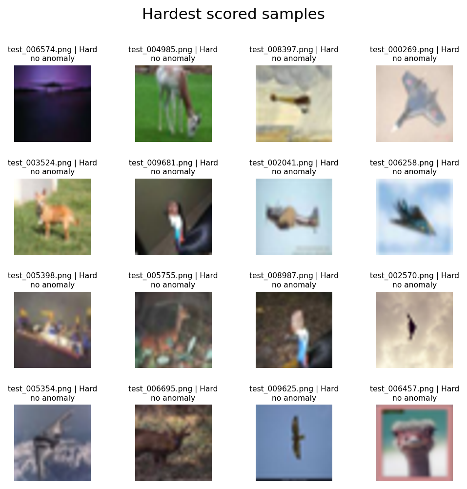
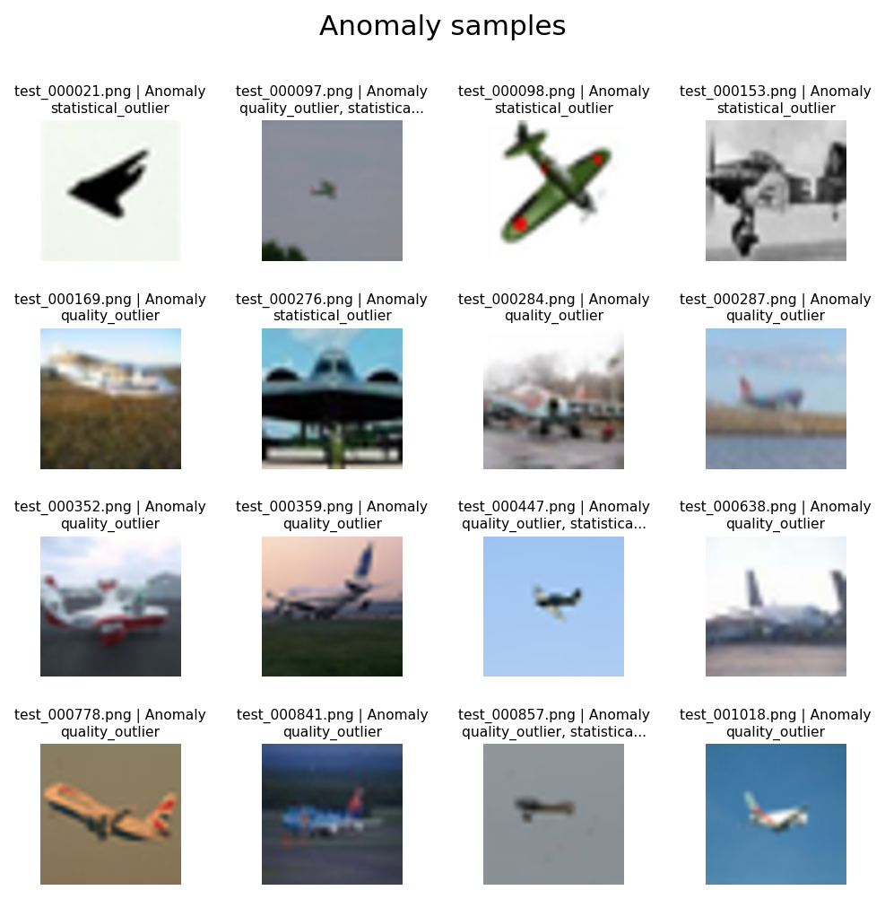

CIFAR-10 Test Split Difficulty Report
Training-free relative difficulty prior. Scores are not accuracy predictions. Label rarity is reported independently and does not affect the composite score. Anomalies are listed separately from Easy, Medium, and Hard bands.
Dataset Counts
Score Interpretation
visual_semantic: Composite prior uses visual accessibility and CLIP semantic components.
Image entropy and frequency complexity are descriptive visual-complexity signals represented by visual_complexity_score. They are not assumed to imply higher task difficulty and do not contribute to the composite score. Image quality, visual accessibility risk, semantic complexity, and the final prior are shown separately. When CLIP is unavailable, the report is visual-only.
Difficulty Bands
{"Medium": 3130, "Hard": 3038, "Easy": 3038, "Anomaly": 794}
Split Counts
{"train": 6444, "test": 1381, "val": 1381, "excluded_anomaly": 794}
Class Distribution
{"train": {"dog": 676, "frog": 667, "horse": 662, "cat": 658, "truck": 658, "automobile": 638, "deer": 633, "bird": 621, "ship": 619, "airplane": 612}, "test": {"dog": 145, "frog": 143, "horse": 142, "cat": 141, "truck": 141, "automobile": 137, "deer": 135, "ship": 133, "airplane": 132, "bird": 132}, "excluded_anomaly": {"airplane": 124, "ship": 115, "bird": 114, "deer": 96, "automobile": 89, "truck": 61, "cat": 60, "horse": 54, "frog": 47, "dog": 34}, "val": {"dog": 145, "frog": 143, "horse": 142, "cat": 141, "truck": 140, "automobile": 136, "deer": 136, "bird": 133, "ship": 133, "airplane": 132}}
Difficulty Distribution
{"train": {"Medium": 2190, "Easy": 2128, "Hard": 2126}, "test": {"Medium": 470, "Hard": 456, "Easy": 455}, "excluded_anomaly": {"Anomaly": 794}, "val": {"Medium": 470, "Hard": 456, "Easy": 455}}
Leakage Risk
{"level": "low", "groups_spanning_splits": 0, "duplicate_groups_spanning_splits": 0, "messages": ["No group_id or duplicate-group leakage detected."]}
Hardest Scored Samples
| sample_id | rel_path | label | blur_laplacian_var | brightness | contrast | image_entropy | spectral_entropy | high_freq_energy_ratio | visual_quality_risk | visual_complexity_score | visual_accessibility_risk | visual_contribution | class_centroid_distance | class_confusion_risk | cross_class_margin | augmentation_stability | augmentation_instability | outlier_component | confusion_component | instability_component | semantic_complexity | semantic_contribution | difficulty_band | difficulty_score | difficulty_scope | anomaly_types | split |
|---|---|---|---|---|---|---|---|---|---|---|---|---|---|---|---|---|---|---|---|---|---|---|---|---|---|---|---|
| f6a80e0905c97eb70bfe | images/airplane/test_006574.png | airplane | 303.5132 | 0.1491 | 0.1090 | 6.0847 | 0.3893 | 0.1200 | 0.0000 | 0.0232 | 0.9825 | 0.2948 | 0.1476 | 0.0223 | -0.0223 | 0.9844 | 0.0156 | 0.9530 | 0.9705 | 0.9541 | 0.9602 | 0.6721 | Hard | 0.9669 | visual_semantic | train | |
| d151f930d19244293308 | images/deer/test_004985.png | deer | 956.2201 | 0.4171 | 0.0966 | 6.2280 | 0.6746 | 0.3670 | 0.0000 | 0.5586 | 0.8536 | 0.2561 | 0.2521 | 0.0124 | -0.0124 | 0.9682 | 0.0318 | 0.9993 | 0.9464 | 0.9948 | 0.9773 | 0.6841 | Hard | 0.9402 | visual_semantic | train | |
| 6d07144f447173a6d752 | images/airplane/test_008397.png | airplane | 898.3370 | 0.7292 | 0.1197 | 6.5311 | 0.6115 | 0.3315 | 0.0000 | 0.4736 | 0.9223 | 0.2767 | 0.1366 | 0.0540 | -0.0540 | 0.9926 | 0.0074 | 0.9264 | 0.9980 | 0.7778 | 0.9253 | 0.6477 | Hard | 0.9244 | visual_semantic | train | |
| ee7de129a67c3ff13773 | images/airplane/test_000269.png | airplane | 421.7415 | 0.7923 | 0.0970 | 5.6809 | 0.5545 | 0.1947 | 0.0000 | 0.1911 | 0.9871 | 0.2961 | 0.1405 | 0.0253 | -0.0253 | 0.9954 | 0.0046 | 0.9365 | 0.9757 | 0.6378 | 0.8924 | 0.6247 | Hard | 0.9208 | visual_semantic | test | |
| 91512a039c9acfe23acc | images/dog/test_003524.png | dog | 979.6543 | 0.5921 | 0.1452 | 6.7835 | 0.5804 | 0.2842 | 0.0000 | 0.4152 | 0.8054 | 0.2416 | 0.1618 | 0.0781 | -0.0781 | 0.9912 | 0.0088 | 0.9722 | 0.9995 | 0.8320 | 0.9551 | 0.6685 | Hard | 0.9102 | visual_semantic | train | |
| 54f7a0bb04971d11955b | images/bird/test_009681.png | bird | 1259.3878 | 0.2856 | 0.1293 | 6.3659 | 0.6369 | 0.3574 | 0.0000 | 0.5183 | 0.8572 | 0.2571 | 0.1443 | 0.0083 | -0.0083 | 0.9887 | 0.0113 | 0.9459 | 0.9310 | 0.8966 | 0.9301 | 0.6511 | Hard | 0.9082 | visual_semantic | train | |
| bc8fc56bc89f88a5ce14 | images/airplane/test_002041.png | airplane | 662.9776 | 0.7885 | 0.1276 | 6.0449 | 0.5777 | 0.2388 | 0.0000 | 0.2871 | 0.9446 | 0.2834 | 0.2225 | 0.0473 | -0.0473 | 0.9972 | 0.0028 | 0.9977 | 0.9955 | 0.4736 | 0.8920 | 0.6244 | Hard | 0.9078 | visual_semantic | train | |
| 797cdaf68ac2dddb820f | images/airplane/test_006258.png | airplane | 661.0143 | 0.7663 | 0.1776 | 6.5882 | 0.4658 | 0.1106 | 0.0000 | 0.0855 | 0.8616 | 0.2585 | 0.1486 | 0.0361 | -0.0361 | 0.9934 | 0.0066 | 0.9559 | 0.9892 | 0.7443 | 0.9269 | 0.6488 | Hard | 0.9073 | visual_semantic | train | |
| dc326c8a76e7d63a7432 | images/ship/test_005398.png | ship | 781.4558 | 0.4094 | 0.1358 | 6.5870 | 0.5288 | 0.2156 | 0.0000 | 0.2233 | 0.8393 | 0.2518 | 0.1362 | 0.0159 | -0.0159 | 0.9886 | 0.0114 | 0.9253 | 0.9562 | 0.8992 | 0.9324 | 0.6527 | Hard | 0.9045 | visual_semantic | train | |
| f5dabaf5557628e59201 | images/deer/test_005755.png | deer | 1017.3527 | 0.3647 | 0.1160 | 6.6101 | 0.5713 | 0.3716 | 0.0000 | 0.4578 | 0.8737 | 0.2621 | 0.1156 | 0.0520 | -0.0520 | 0.9893 | 0.0107 | 0.8400 | 0.9973 | 0.8857 | 0.9121 | 0.6384 | Hard | 0.9005 | visual_semantic | val | |
| c942e9e9588a69049799 | images/bird/test_008987.png | bird | 941.8496 | 0.2987 | 0.1464 | 6.5941 | 0.5737 | 0.2693 | 0.0000 | 0.3572 | 0.8742 | 0.2623 | 0.1329 | 0.0059 | -0.0059 | 0.9896 | 0.0104 | 0.9149 | 0.9218 | 0.8777 | 0.9102 | 0.6372 | Hard | 0.8994 | visual_semantic | val | |
| 8266353c8234781fd54b | images/airplane/test_002570.png | airplane | 1016.1467 | 0.7591 | 0.1199 | 6.5315 | 0.5519 | 0.3281 | 0.0000 | 0.3788 | 0.9140 | 0.2742 | 0.1288 | 0.0121 | -0.0121 | 0.9928 | 0.0072 | 0.9001 | 0.9455 | 0.7679 | 0.8918 | 0.6243 | Hard | 0.8985 | visual_semantic | train | |
| 297f9f41969e5a1c406e | images/airplane/test_005354.png | airplane | 995.1476 | 0.4395 | 0.1045 | 6.5444 | 0.6353 | 0.3804 | 0.0000 | 0.5523 | 0.8183 | 0.2455 | 0.1444 | 0.0046 | -0.0046 | 0.9870 | 0.0130 | 0.9464 | 0.9173 | 0.9279 | 0.9311 | 0.6518 | Hard | 0.8973 | visual_semantic | test | |
| aa388012ade17d4031c7 | images/deer/test_006695.png | deer | 1003.0249 | 0.3104 | 0.1152 | 6.6644 | 0.5578 | 0.2589 | 0.0000 | 0.3310 | 0.9041 | 0.2712 | 0.1066 | 0.0506 | -0.0506 | 0.9881 | 0.0119 | 0.7831 | 0.9968 | 0.9100 | 0.8940 | 0.6258 | Hard | 0.8970 | visual_semantic | train | |
| 14fe934ab86cad9ad6fc | images/bird/test_009625.png | bird | 1102.8162 | 0.5075 | 0.0880 | 4.9377 | 0.6441 | 0.6238 | 0.0000 | 0.5897 | 0.7426 | 0.2228 | 0.1802 | 0.0091 | -0.0091 | 0.9823 | 0.0177 | 0.9877 | 0.9338 | 0.9685 | 0.9623 | 0.6736 | Hard | 0.8964 | visual_semantic | train | |
| 52c38703286f67e96ce8 | images/bird/test_006457.png | bird | 845.3851 | 0.5677 | 0.1914 | 6.9164 | 0.5137 | 0.1382 | 0.0000 | 0.1982 | 0.7132 | 0.2140 | 0.1854 | 0.0203 | -0.0203 | 0.9838 | 0.0162 | 0.9898 | 0.9674 | 0.9584 | 0.9746 | 0.6822 | Hard | 0.8962 | visual_semantic | test | |
| c0fc53428752142ef6de | images/ship/test_003357.png | ship | 727.8019 | 0.5492 | 0.0964 | 6.1871 | 0.6479 | 0.4374 | 0.0000 | 0.5728 | 0.8383 | 0.2515 | 0.1277 | 0.0180 | -0.0180 | 0.9896 | 0.0104 | 0.8960 | 0.9622 | 0.8791 | 0.9191 | 0.6434 | Hard | 0.8949 | visual_semantic | train | |
| 34819b9314558206601b | images/airplane/test_006077.png | airplane | 1012.8747 | 0.5885 | 0.1039 | 5.9343 | 0.6453 | 0.3900 | 0.0000 | 0.5373 | 0.8469 | 0.2541 | 0.1201 | 0.0125 | -0.0125 | 0.9853 | 0.0147 | 0.8648 | 0.9470 | 0.9460 | 0.9139 | 0.6397 | Hard | 0.8938 | visual_semantic | train | |
| 4c561853f39810b34ee4 | images/deer/test_002519.png | deer | 1159.4986 | 0.2754 | 0.1200 | 6.3427 | 0.6684 | 0.3908 | 0.0000 | 0.5797 | 0.8870 | 0.2661 | 0.1140 | 0.0010 | -0.0010 | 0.9703 | 0.0297 | 0.8301 | 0.9027 | 0.9933 | 0.8918 | 0.6242 | Hard | 0.8903 | visual_semantic | test | |
| 7bd988f76a87ae8b457a | images/dog/test_008589.png | dog | 1223.5220 | 0.4786 | 0.1253 | 6.8309 | 0.6562 | 0.3397 | 0.0000 | 0.5915 | 0.7137 | 0.2141 | 0.1620 | 0.0198 | -0.0198 | 0.9848 | 0.0152 | 0.9727 | 0.9657 | 0.9505 | 0.9655 | 0.6758 | Hard | 0.8899 | visual_semantic | train | |
| 3441a7b3629832b2bea5 | images/bird/test_008318.png | bird | 1302.0522 | 0.1849 | 0.1550 | 5.8602 | 0.5433 | 0.2136 | 0.0000 | 0.1992 | 0.8254 | 0.2476 | 0.1666 | 0.0337 | -0.0337 | 0.9951 | 0.0049 | 0.9772 | 0.9869 | 0.6585 | 0.9173 | 0.6421 | Hard | 0.8897 | visual_semantic | val | |
| f74000a6ffe99c4ecdd5 | images/bird/test_000873.png | bird | 656.1419 | 0.5233 | 0.1066 | 6.1504 | 0.5677 | 0.1973 | 0.0000 | 0.2250 | 0.8029 | 0.2409 | 0.1765 | 0.0119 | -0.0119 | 0.9929 | 0.0071 | 0.9862 | 0.9445 | 0.7653 | 0.9253 | 0.6477 | Hard | 0.8886 | visual_semantic | val | |
| 4f45d3d1a60c6df7bec7 | images/ship/test_001294.png | ship | 1376.3584 | 0.6989 | 0.1650 | 6.6498 | 0.5476 | 0.2066 | 0.0000 | 0.2463 | 0.7774 | 0.2332 | 0.1528 | 0.0484 | -0.0484 | 0.9930 | 0.0070 | 0.9625 | 0.9961 | 0.7598 | 0.9354 | 0.6548 | Hard | 0.8880 | visual_semantic | train | |
| 3b6fea08c15da8ec0211 | images/bird/test_006515.png | bird | 1036.8215 | 0.3268 | 0.1875 | 7.0347 | 0.5412 | 0.1765 | 0.0000 | 0.2955 | 0.7800 | 0.2340 | 0.1197 | 0.0296 | -0.0296 | 0.9813 | 0.0187 | 0.8620 | 0.9825 | 0.9726 | 0.9323 | 0.6526 | Hard | 0.8866 | visual_semantic | train | |
| f40ac6b5631dcc5881b1 | images/airplane/test_002192.png | airplane | 1079.4083 | 0.6360 | 0.1062 | 6.5250 | 0.6500 | 0.3616 | 0.0000 | 0.5539 | 0.8740 | 0.2622 | 0.1197 | 0.0067 | -0.0067 | 0.9895 | 0.0105 | 0.8628 | 0.9250 | 0.8799 | 0.8911 | 0.6238 | Hard | 0.8860 | visual_semantic | val | |
| c80253ce05b495e32537 | images/dog/test_005046.png | dog | 812.2998 | 0.4891 | 0.1532 | 6.5907 | 0.5033 | 0.1829 | 0.0000 | 0.1602 | 0.7113 | 0.2134 | 0.1461 | 0.0118 | -0.0118 | 0.9779 | 0.0221 | 0.9506 | 0.9442 | 0.9838 | 0.9547 | 0.6683 | Hard | 0.8816 | visual_semantic | train | |
| eb6e83b069259a79792d | images/horse/test_003044.png | horse | 1450.9367 | 0.3677 | 0.1234 | 6.7996 | 0.6534 | 0.3328 | 0.0000 | 0.5754 | 0.7907 | 0.2372 | 0.1194 | 0.0378 | -0.0378 | 0.9887 | 0.0113 | 0.8599 | 0.9903 | 0.8968 | 0.9194 | 0.6436 | Hard | 0.8808 | visual_semantic | train | |
| 6712389911e3ea67b7f3 | images/deer/test_001292.png | deer | 1472.1287 | 0.3705 | 0.2221 | 7.1067 | 0.4637 | 0.1361 | 0.0000 | 0.2138 | 0.6119 | 0.1836 | 0.2422 | 0.0297 | -0.0297 | 0.9560 | 0.0440 | 0.9989 | 0.9829 | 0.9975 | 0.9922 | 0.6946 | Hard | 0.8781 | visual_semantic | test | |
| b772f6b4ba0c17922cbd | images/airplane/test_000313.png | airplane | 742.4004 | 0.8527 | 0.0845 | 5.6187 | 0.6469 | 0.3179 | 0.0000 | 0.4737 | 0.9741 | 0.2922 | 0.1683 | 0.0119 | -0.0119 | 0.9981 | 0.0019 | 0.9793 | 0.9443 | 0.3364 | 0.8367 | 0.5857 | Hard | 0.8779 | visual_semantic | train | |
| 6fa083f73279292b9898 | images/airplane/test_001090.png | airplane | 603.8850 | 0.6068 | 0.1566 | 6.6796 | 0.4336 | 0.2491 | 0.0000 | 0.2083 | 0.8376 | 0.2513 | 0.1726 | 0.0480 | -0.0480 | 0.9969 | 0.0031 | 0.9835 | 0.9959 | 0.5052 | 0.8928 | 0.6250 | Hard | 0.8762 | visual_semantic | train | |
| 8154366d473f7d317bfa | images/horse/test_009013.png | horse | 1274.6430 | 0.4317 | 0.1545 | 7.0878 | 0.6337 | 0.3154 | 0.0000 | 0.6119 | 0.7240 | 0.2172 | 0.1367 | 0.0190 | -0.0190 | 0.9881 | 0.0119 | 0.9273 | 0.9638 | 0.9085 | 0.9382 | 0.6567 | Hard | 0.8739 | visual_semantic | train | |
| 3c9d1bcfedb55a9a87b6 | images/ship/test_009105.png | ship | 980.0306 | 0.4934 | 0.1532 | 6.5769 | 0.5351 | 0.2276 | 0.0000 | 0.2459 | 0.6865 | 0.2059 | 0.1409 | 0.0409 | -0.0409 | 0.9879 | 0.0121 | 0.9372 | 0.9920 | 0.9127 | 0.9542 | 0.6679 | Hard | 0.8739 | visual_semantic | test | |
| dd58aa474459e79f6ffc | images/deer/test_005496.png | deer | 1243.9352 | 0.6771 | 0.1983 | 6.2077 | 0.4830 | 0.1280 | 0.0000 | 0.0701 | 0.7288 | 0.2186 | 0.1312 | 0.0080 | -0.0080 | 0.9723 | 0.0277 | 0.9096 | 0.9305 | 0.9908 | 0.9342 | 0.6539 | Hard | 0.8726 | visual_semantic | train | |
| 9c5e92c426553f090443 | images/deer/test_003433.png | deer | 1841.5982 | 0.6542 | 0.1523 | 6.7595 | 0.6473 | 0.5214 | 0.0000 | 0.6572 | 0.6944 | 0.2083 | 0.1413 | 0.0146 | -0.0146 | 0.9833 | 0.0167 | 0.9383 | 0.9530 | 0.9613 | 0.9488 | 0.6641 | Hard | 0.8725 | visual_semantic | train | |
| be43a5e8a6e85c5f1607 | images/dog/test_002161.png | dog | 1121.3842 | 0.5102 | 0.1405 | 6.4160 | 0.5340 | 0.3029 | 0.0000 | 0.3166 | 0.6918 | 0.2075 | 0.1428 | 0.0054 | -0.0054 | 0.9645 | 0.0355 | 0.9426 | 0.9205 | 0.9961 | 0.9445 | 0.6611 | Hard | 0.8687 | visual_semantic | train | |
| 90422cdc8730364f9aab | images/horse/test_009301.png | horse | 812.2061 | 0.2061 | 0.1920 | 6.2843 | 0.4834 | 0.1181 | 0.0000 | 0.0716 | 0.8220 | 0.2466 | 0.1669 | 0.0786 | -0.0786 | 0.9971 | 0.0029 | 0.9778 | 0.9996 | 0.4862 | 0.8882 | 0.6217 | Hard | 0.8683 | visual_semantic | train | |
| 90b45422f622135c3edf | images/dog/test_005102.png | dog | 745.2115 | 0.3432 | 0.1112 | 6.4562 | 0.4895 | 0.1750 | 0.0000 | 0.1271 | 0.9207 | 0.2762 | 0.1007 | 0.0008 | -0.0008 | 0.9829 | 0.0171 | 0.7292 | 0.9020 | 0.9644 | 0.8454 | 0.5918 | Hard | 0.8680 | visual_semantic | val | |
| f06c68b8c7c8c51a9610 | images/dog/test_006423.png | dog | 1402.8132 | 0.4689 | 0.1338 | 6.0467 | 0.6648 | 0.3263 | 0.0000 | 0.5072 | 0.6837 | 0.2051 | 0.1249 | 0.0409 | -0.0409 | 0.9793 | 0.0207 | 0.8849 | 0.9919 | 0.9787 | 0.9464 | 0.6625 | Hard | 0.8676 | visual_semantic | train | |
| e15023519b40fa14aab1 | images/horse/test_008142.png | horse | 1401.4900 | 0.4458 | 0.1150 | 6.3348 | 0.6713 | 0.4597 | 0.0000 | 0.6156 | 0.7375 | 0.2213 | 0.1584 | 0.0223 | -0.0223 | 0.9936 | 0.0064 | 0.9685 | 0.9707 | 0.7369 | 0.9231 | 0.6461 | Hard | 0.8674 | visual_semantic | train | |
| 0b00d6a5c66891994ebe | images/deer/test_003510.png | deer | 950.7263 | 0.4482 | 0.0803 | 6.1943 | 0.6751 | 0.4655 | 0.0000 | 0.6117 | 0.8258 | 0.2477 | 0.1091 | 0.0361 | -0.0361 | 0.9907 | 0.0093 | 0.7992 | 0.9891 | 0.8486 | 0.8850 | 0.6195 | Hard | 0.8673 | visual_semantic | train | |
| 49737d2f163e75ade6e7 | images/dog/test_005797.png | dog | 649.4473 | 0.3272 | 0.1764 | 6.9393 | 0.5166 | 0.2242 | 0.0000 | 0.2906 | 0.8402 | 0.2520 | 0.1711 | 0.0245 | -0.0245 | 0.9972 | 0.0028 | 0.9822 | 0.9746 | 0.4721 | 0.8771 | 0.6140 | Hard | 0.8660 | visual_semantic | train | |
| 4767c4cf15379273ee8a | images/bird/test_004491.png | bird | 702.3242 | 0.6025 | 0.0900 | 6.1570 | 0.6681 | 0.3561 | 0.0000 | 0.5414 | 0.9011 | 0.2703 | 0.1020 | 0.0293 | -0.0293 | 0.9919 | 0.0081 | 0.7410 | 0.9822 | 0.8056 | 0.8504 | 0.5953 | Hard | 0.8656 | visual_semantic | train | |
| 6408d7cc53c2c9189c6c | images/bird/test_001954.png | bird | 764.3920 | 0.6039 | 0.1406 | 6.9396 | 0.4363 | 0.2127 | 0.0000 | 0.2181 | 0.8460 | 0.2538 | 0.1082 | 0.0117 | -0.0117 | 0.9897 | 0.0103 | 0.7944 | 0.9437 | 0.8766 | 0.8706 | 0.6094 | Hard | 0.8632 | visual_semantic | val | |
| caa3da593213ba1e08e0 | images/horse/test_002586.png | horse | 661.0951 | 0.3533 | 0.1417 | 6.2184 | 0.5083 | 0.1639 | 0.0000 | 0.1158 | 0.8843 | 0.2653 | 0.1136 | 0.0220 | -0.0220 | 0.9948 | 0.0052 | 0.8284 | 0.9698 | 0.6742 | 0.8541 | 0.5979 | Hard | 0.8632 | visual_semantic | test | |
| bf10bd1bb5e9ac4df196 | images/airplane/test_003550.png | airplane | 1033.6939 | 0.5357 | 0.0908 | 6.3031 | 0.7238 | 0.5199 | 0.0000 | 0.6577 | 0.7904 | 0.2371 | 0.1153 | 0.0067 | -0.0067 | 0.9854 | 0.0146 | 0.8377 | 0.9249 | 0.9447 | 0.8940 | 0.6258 | Hard | 0.8629 | visual_semantic | test | |
| 001ee19f37560ddbe8c1 | images/dog/test_003192.png | dog | 982.3226 | 0.5743 | 0.1550 | 6.5640 | 0.5881 | 0.1946 | 0.0000 | 0.2842 | 0.7714 | 0.2314 | 0.1635 | 0.0514 | -0.0514 | 0.9963 | 0.0037 | 0.9737 | 0.9972 | 0.5688 | 0.9021 | 0.6315 | Hard | 0.8629 | visual_semantic | train | |
| 4263895fdf660a18388b | images/cat/test_005213.png | cat | 1710.0434 | 0.4611 | 0.1542 | 7.0977 | 0.6516 | 0.4319 | 0.0000 | 0.7251 | 0.6079 | 0.1824 | 0.1505 | 0.0274 | -0.0274 | 0.9804 | 0.0196 | 0.9589 | 0.9795 | 0.9757 | 0.9705 | 0.6793 | Hard | 0.8617 | visual_semantic | test | |
| 5144f5d6133ce51aaf07 | images/horse/test_006151.png | horse | 1299.6085 | 0.4910 | 0.1505 | 7.0611 | 0.5992 | 0.2722 | 0.0000 | 0.5041 | 0.6473 | 0.1942 | 0.1425 | 0.0457 | -0.0457 | 0.9890 | 0.0110 | 0.9416 | 0.9942 | 0.8902 | 0.9524 | 0.6667 | Hard | 0.8608 | visual_semantic | train | |
| 819503421698cc283d40 | images/horse/test_008538.png | horse | 1905.6737 | 0.4335 | 0.1349 | 6.8213 | 0.6535 | 0.4846 | 0.0000 | 0.6692 | 0.6368 | 0.1910 | 0.2112 | 0.0064 | -0.0064 | 0.9856 | 0.0144 | 0.9972 | 0.9235 | 0.9426 | 0.9568 | 0.6698 | Hard | 0.8608 | visual_semantic | train | |
| 309b0355ee57e89aff69 | images/airplane/test_003897.png | airplane | 1606.8412 | 0.6007 | 0.1108 | 6.5497 | 0.5942 | 0.4570 | 0.0000 | 0.5319 | 0.7517 | 0.2255 | 0.1963 | 0.0271 | -0.0271 | 0.9960 | 0.0040 | 0.9948 | 0.9786 | 0.5871 | 0.9068 | 0.6347 | Hard | 0.8603 | visual_semantic | train |
Hard Sample Preview

Anomaly Samples
| sample_id | rel_path | label | blur_laplacian_var | brightness | contrast | image_entropy | spectral_entropy | high_freq_energy_ratio | visual_quality_risk | visual_complexity_score | visual_accessibility_risk | visual_contribution | class_centroid_distance | class_confusion_risk | cross_class_margin | augmentation_stability | augmentation_instability | outlier_component | confusion_component | instability_component | semantic_complexity | semantic_contribution | difficulty_band | difficulty_score | difficulty_scope | anomaly_types | split |
|---|---|---|---|---|---|---|---|---|---|---|---|---|---|---|---|---|---|---|---|---|---|---|---|---|---|---|---|
| 0e47fb2696856b631b38 | images/airplane/test_000021.png | airplane | 3427.6154 | 0.8579 | 0.2758 | 3.6663 | 0.5416 | 0.1723 | 0.0000 | n/a | n/a | n/a | n/a | n/a | n/a | n/a | n/a | n/a | n/a | n/a | n/a | n/a | Anomaly | n/a | anomaly | statistical_outlier | excluded_anomaly |
| ed0d6d0ffa106eca6246 | images/airplane/test_000097.png | airplane | 219.7063 | 0.5344 | 0.0724 | 3.0379 | 0.7015 | 0.4590 | 0.1667 | n/a | n/a | n/a | n/a | n/a | n/a | n/a | n/a | n/a | n/a | n/a | n/a | n/a | Anomaly | n/a | anomaly | quality_outlier;statistical_outlier | excluded_anomaly |
| 672668f730054b59d426 | images/airplane/test_000098.png | airplane | 5137.5452 | 0.8214 | 0.2892 | 4.2497 | 0.5912 | 0.2404 | 0.0000 | n/a | n/a | n/a | n/a | n/a | n/a | n/a | n/a | n/a | n/a | n/a | n/a | n/a | Anomaly | n/a | anomaly | statistical_outlier | excluded_anomaly |
| 9a5919137a661b52d126 | images/airplane/test_000153.png | airplane | 6164.2383 | 0.6170 | 0.2355 | 7.0853 | 0.6508 | 0.3412 | 0.0000 | n/a | n/a | n/a | n/a | n/a | n/a | n/a | n/a | n/a | n/a | n/a | n/a | n/a | Anomaly | n/a | anomaly | statistical_outlier | excluded_anomaly |
| 94a221469c5ea717a90b | images/airplane/test_000169.png | airplane | 1199.1660 | 0.5028 | 0.2765 | 7.0019 | 0.3409 | 0.1344 | 0.1667 | n/a | n/a | n/a | n/a | n/a | n/a | n/a | n/a | n/a | n/a | n/a | n/a | n/a | Anomaly | n/a | anomaly | quality_outlier | excluded_anomaly |
| bdf0648b72c5a2c62956 | images/airplane/test_000276.png | airplane | 8458.2700 | 0.3937 | 0.2778 | 7.0499 | 0.4810 | 0.3278 | 0.0000 | n/a | n/a | n/a | n/a | n/a | n/a | n/a | n/a | n/a | n/a | n/a | n/a | n/a | Anomaly | n/a | anomaly | statistical_outlier | excluded_anomaly |
| 12091588c9671cbb6dd1 | images/airplane/test_000284.png | airplane | 2126.3559 | 0.6540 | 0.2489 | 7.0538 | 0.3464 | 0.1697 | 0.1667 | n/a | n/a | n/a | n/a | n/a | n/a | n/a | n/a | n/a | n/a | n/a | n/a | n/a | Anomaly | n/a | anomaly | quality_outlier | excluded_anomaly |
| 51aac80afea0709fe896 | images/airplane/test_000287.png | airplane | 256.6588 | 0.6290 | 0.1205 | 5.9413 | 0.3480 | 0.1492 | 0.1667 | n/a | n/a | n/a | n/a | n/a | n/a | n/a | n/a | n/a | n/a | n/a | n/a | n/a | Anomaly | n/a | anomaly | quality_outlier | excluded_anomaly |
| ba09a832a3a42ed86dcb | images/airplane/test_000352.png | airplane | 1757.0405 | 0.5385 | 0.3125 | 7.1074 | 0.3342 | 0.1602 | 0.1667 | n/a | n/a | n/a | n/a | n/a | n/a | n/a | n/a | n/a | n/a | n/a | n/a | n/a | Anomaly | n/a | anomaly | quality_outlier | excluded_anomaly |
| 6e2e0d5f7dd44617ff59 | images/airplane/test_000359.png | airplane | 1889.3700 | 0.4363 | 0.2914 | 6.8934 | 0.3327 | 0.1454 | 0.1667 | n/a | n/a | n/a | n/a | n/a | n/a | n/a | n/a | n/a | n/a | n/a | n/a | n/a | Anomaly | n/a | anomaly | quality_outlier | excluded_anomaly |
| cf088fba487dcd8a18ee | images/airplane/test_000447.png | airplane | 969.6161 | 0.7502 | 0.0775 | 3.8028 | 0.7304 | 0.5109 | 0.1667 | n/a | n/a | n/a | n/a | n/a | n/a | n/a | n/a | n/a | n/a | n/a | n/a | n/a | Anomaly | n/a | anomaly | quality_outlier;statistical_outlier | excluded_anomaly |
| d4930d8c62c787e1c419 | images/airplane/test_000638.png | airplane | 1481.6781 | 0.7342 | 0.2579 | 6.1643 | 0.3455 | 0.1401 | 0.1667 | n/a | n/a | n/a | n/a | n/a | n/a | n/a | n/a | n/a | n/a | n/a | n/a | n/a | Anomaly | n/a | anomaly | quality_outlier | excluded_anomaly |
| 5d8b14e2c4580a8c570e | images/airplane/test_000778.png | airplane | 1493.1916 | 0.4791 | 0.0736 | 4.6604 | 0.7548 | 0.6999 | 0.1667 | n/a | n/a | n/a | n/a | n/a | n/a | n/a | n/a | n/a | n/a | n/a | n/a | n/a | Anomaly | n/a | anomaly | quality_outlier | excluded_anomaly |
| 0a0b49dcdb866d2a3dca | images/airplane/test_000841.png | airplane | 476.2373 | 0.2617 | 0.0713 | 5.9864 | 0.5554 | 0.3922 | 0.1667 | n/a | n/a | n/a | n/a | n/a | n/a | n/a | n/a | n/a | n/a | n/a | n/a | n/a | Anomaly | n/a | anomaly | quality_outlier | excluded_anomaly |
| ad2d00d178a362422b11 | images/airplane/test_000857.png | airplane | 251.5455 | 0.5556 | 0.0503 | 3.3144 | 0.6860 | 0.4651 | 0.1667 | n/a | n/a | n/a | n/a | n/a | n/a | n/a | n/a | n/a | n/a | n/a | n/a | n/a | Anomaly | n/a | anomaly | quality_outlier;statistical_outlier | excluded_anomaly |
| 7b41d15622a2849e8d0e | images/airplane/test_001018.png | airplane | 719.0797 | 0.4553 | 0.0671 | 5.2211 | 0.7089 | 0.5333 | 0.1667 | n/a | n/a | n/a | n/a | n/a | n/a | n/a | n/a | n/a | n/a | n/a | n/a | n/a | Anomaly | n/a | anomaly | quality_outlier | excluded_anomaly |
| e993f04bbc7b1a87b6f7 | images/airplane/test_001052.png | airplane | 2384.4738 | 0.2050 | 0.1403 | 4.3129 | 0.6649 | 0.4252 | 0.0000 | n/a | n/a | n/a | n/a | n/a | n/a | n/a | n/a | n/a | n/a | n/a | n/a | n/a | Anomaly | n/a | anomaly | statistical_outlier | excluded_anomaly |
| c97cce3db9b5cae72d14 | images/airplane/test_001078.png | airplane | 1918.5976 | 0.9237 | 0.2020 | 2.8633 | 0.5413 | 0.2134 | 0.1667 | n/a | n/a | n/a | n/a | n/a | n/a | n/a | n/a | n/a | n/a | n/a | n/a | n/a | Anomaly | n/a | anomaly | quality_outlier;statistical_outlier | excluded_anomaly |
| 23bef5449ff410c8952f | images/airplane/test_001188.png | airplane | 733.3652 | 0.3022 | 0.0598 | 4.6709 | 0.7731 | 0.7577 | 0.1667 | n/a | n/a | n/a | n/a | n/a | n/a | n/a | n/a | n/a | n/a | n/a | n/a | n/a | Anomaly | n/a | anomaly | quality_outlier | excluded_anomaly |
| 8632491dba8d9e3d817b | images/airplane/test_001365.png | airplane | 875.7832 | 0.6433 | 0.1192 | 3.8728 | 0.5799 | 0.2512 | 0.0000 | n/a | n/a | n/a | n/a | n/a | n/a | n/a | n/a | n/a | n/a | n/a | n/a | n/a | Anomaly | n/a | anomaly | statistical_outlier | excluded_anomaly |
| 7b3d5b20bae83940372f | images/airplane/test_001651.png | airplane | 82.7087 | 0.5873 | 0.0393 | 4.6031 | 0.6691 | 0.3625 | 0.1667 | n/a | n/a | n/a | n/a | n/a | n/a | n/a | n/a | n/a | n/a | n/a | n/a | n/a | Anomaly | n/a | anomaly | quality_outlier | excluded_anomaly |
| ba4ce2f896930d2fbdfe | images/airplane/test_001664.png | airplane | 936.4084 | 0.9178 | 0.1393 | 4.6795 | 0.6009 | 0.3191 | 0.1667 | n/a | n/a | n/a | n/a | n/a | n/a | n/a | n/a | n/a | n/a | n/a | n/a | n/a | Anomaly | n/a | anomaly | quality_outlier | excluded_anomaly |
| ba63855e28d801f82e07 | images/airplane/test_001725.png | airplane | 1178.8728 | 0.6134 | 0.2701 | 6.9211 | 0.3447 | 0.1388 | 0.1667 | n/a | n/a | n/a | n/a | n/a | n/a | n/a | n/a | n/a | n/a | n/a | n/a | n/a | Anomaly | n/a | anomaly | quality_outlier | excluded_anomaly |
| 31e5110f66388fd98e3e | images/airplane/test_001735.png | airplane | 784.7209 | 0.5415 | 0.0645 | 5.9385 | 0.7238 | 0.5801 | 0.1667 | n/a | n/a | n/a | n/a | n/a | n/a | n/a | n/a | n/a | n/a | n/a | n/a | n/a | Anomaly | n/a | anomaly | quality_outlier | excluded_anomaly |
| d11a8b5f47bc59ff2644 | images/airplane/test_001748.png | airplane | 1242.4763 | 0.6979 | 0.1134 | 4.3035 | 0.6634 | 0.3706 | 0.0000 | n/a | n/a | n/a | n/a | n/a | n/a | n/a | n/a | n/a | n/a | n/a | n/a | n/a | Anomaly | n/a | anomaly | statistical_outlier | excluded_anomaly |
| 0c5b720fbc30d0655c89 | images/airplane/test_001776.png | airplane | 796.4247 | 0.6565 | 0.1170 | 4.2866 | 0.6122 | 0.3103 | 0.0000 | n/a | n/a | n/a | n/a | n/a | n/a | n/a | n/a | n/a | n/a | n/a | n/a | n/a | Anomaly | n/a | anomaly | statistical_outlier | excluded_anomaly |
| 3fcb34e22e09339e697b | images/airplane/test_001851.png | airplane | 7087.1962 | 0.7233 | 0.2195 | 5.9913 | 0.6650 | 0.3608 | 0.0000 | n/a | n/a | n/a | n/a | n/a | n/a | n/a | n/a | n/a | n/a | n/a | n/a | n/a | Anomaly | n/a | anomaly | statistical_outlier | excluded_anomaly |
| 80140882423e0b073dc4 | images/airplane/test_001875.png | airplane | 763.4477 | 0.5739 | 0.1111 | 4.0190 | 0.5846 | 0.2863 | 0.0000 | n/a | n/a | n/a | n/a | n/a | n/a | n/a | n/a | n/a | n/a | n/a | n/a | n/a | Anomaly | n/a | anomaly | statistical_outlier | excluded_anomaly |
| cccec6d3243b3d95dd24 | images/airplane/test_001973.png | airplane | 778.8083 | 0.5967 | 0.0833 | 3.9974 | 0.6151 | 0.3808 | 0.0000 | n/a | n/a | n/a | n/a | n/a | n/a | n/a | n/a | n/a | n/a | n/a | n/a | n/a | Anomaly | n/a | anomaly | statistical_outlier | excluded_anomaly |
| 6635edeb1cebf3955289 | images/airplane/test_002079.png | airplane | 777.5242 | 0.5275 | 0.1566 | 4.2445 | 0.4968 | 0.1958 | 0.0000 | n/a | n/a | n/a | n/a | n/a | n/a | n/a | n/a | n/a | n/a | n/a | n/a | n/a | Anomaly | n/a | anomaly | statistical_outlier | excluded_anomaly |
| 95505e8a3a858b7ffd5c | images/airplane/test_002136.png | airplane | 6271.6227 | 0.4694 | 0.2141 | 7.4800 | 0.7139 | 0.5308 | 0.0000 | n/a | n/a | n/a | n/a | n/a | n/a | n/a | n/a | n/a | n/a | n/a | n/a | n/a | Anomaly | n/a | anomaly | statistical_outlier | excluded_anomaly |
| aa6793dbd76901dcad72 | images/airplane/test_002200.png | airplane | 351.5660 | 0.3962 | 0.0310 | 3.8363 | 0.8659 | 0.7709 | 0.1667 | n/a | n/a | n/a | n/a | n/a | n/a | n/a | n/a | n/a | n/a | n/a | n/a | n/a | Anomaly | n/a | anomaly | quality_outlier;statistical_outlier | excluded_anomaly |
| b6571d465594b2041c16 | images/airplane/test_002400.png | airplane | 2090.3497 | 0.8986 | 0.2179 | 3.6577 | 0.5664 | 0.2577 | 0.1667 | n/a | n/a | n/a | n/a | n/a | n/a | n/a | n/a | n/a | n/a | n/a | n/a | n/a | Anomaly | n/a | anomaly | quality_outlier;statistical_outlier | excluded_anomaly |
| 0952e60986fe7645d24f | images/airplane/test_002461.png | airplane | 284.2212 | 0.5911 | 0.0703 | 4.3929 | 0.5835 | 0.3278 | 0.1667 | n/a | n/a | n/a | n/a | n/a | n/a | n/a | n/a | n/a | n/a | n/a | n/a | n/a | Anomaly | n/a | anomaly | quality_outlier;statistical_outlier | excluded_anomaly |
| d6c4dda263910c7698df | images/airplane/test_002468.png | airplane | 906.6066 | 0.6258 | 0.0845 | 4.4003 | 0.6785 | 0.4892 | 0.0000 | n/a | n/a | n/a | n/a | n/a | n/a | n/a | n/a | n/a | n/a | n/a | n/a | n/a | Anomaly | n/a | anomaly | statistical_outlier | excluded_anomaly |
| 3b6a568cc0da8f9ea8b9 | images/airplane/test_002507.png | airplane | 276.0602 | 0.6121 | 0.0540 | 4.9612 | 0.7137 | 0.4698 | 0.1667 | n/a | n/a | n/a | n/a | n/a | n/a | n/a | n/a | n/a | n/a | n/a | n/a | n/a | Anomaly | n/a | anomaly | quality_outlier | excluded_anomaly |
| a3ddb0ff443a278129df | images/airplane/test_002589.png | airplane | 412.0907 | 0.3623 | 0.0626 | 5.3749 | 0.6359 | 0.4134 | 0.1667 | n/a | n/a | n/a | n/a | n/a | n/a | n/a | n/a | n/a | n/a | n/a | n/a | n/a | Anomaly | n/a | anomaly | quality_outlier | excluded_anomaly |
| e08cb510d6b7e9e984f4 | images/airplane/test_002622.png | airplane | 703.3048 | 0.6187 | 0.0610 | 5.2539 | 0.7240 | 0.4552 | 0.1667 | n/a | n/a | n/a | n/a | n/a | n/a | n/a | n/a | n/a | n/a | n/a | n/a | n/a | Anomaly | n/a | anomaly | quality_outlier | excluded_anomaly |
| 4cce40d109b720adbd7c | images/airplane/test_002668.png | airplane | 259.5003 | 0.6103 | 0.0704 | 5.5097 | 0.6448 | 0.3521 | 0.1667 | n/a | n/a | n/a | n/a | n/a | n/a | n/a | n/a | n/a | n/a | n/a | n/a | n/a | Anomaly | n/a | anomaly | quality_outlier | excluded_anomaly |
| 62592f92547b45429399 | images/airplane/test_002679.png | airplane | 7131.2398 | 0.7293 | 0.2991 | 6.4337 | 0.5871 | 0.2784 | 0.0000 | n/a | n/a | n/a | n/a | n/a | n/a | n/a | n/a | n/a | n/a | n/a | n/a | n/a | Anomaly | n/a | anomaly | statistical_outlier | excluded_anomaly |
| 5db519cc96b78db2636a | images/airplane/test_002968.png | airplane | 667.2973 | 0.4589 | 0.0497 | 4.6412 | 0.7868 | 0.7077 | 0.1667 | n/a | n/a | n/a | n/a | n/a | n/a | n/a | n/a | n/a | n/a | n/a | n/a | n/a | Anomaly | n/a | anomaly | quality_outlier | excluded_anomaly |
| 08b76aa409902cb1f6b5 | images/airplane/test_003100.png | airplane | 149.2353 | 0.5149 | 0.0489 | 5.0333 | 0.5960 | 0.3543 | 0.1667 | n/a | n/a | n/a | n/a | n/a | n/a | n/a | n/a | n/a | n/a | n/a | n/a | n/a | Anomaly | n/a | anomaly | quality_outlier | excluded_anomaly |
| 5149e5f10e7af871da14 | images/airplane/test_003184.png | airplane | 772.9431 | 0.7420 | 0.0796 | 5.9510 | 0.6899 | 0.5562 | 0.1667 | n/a | n/a | n/a | n/a | n/a | n/a | n/a | n/a | n/a | n/a | n/a | n/a | n/a | Anomaly | n/a | anomaly | quality_outlier | excluded_anomaly |
| 547c4a1a027dc662218b | images/airplane/test_003248.png | airplane | 582.8854 | 0.5604 | 0.0576 | 3.7768 | 0.7344 | 0.4888 | 0.1667 | n/a | n/a | n/a | n/a | n/a | n/a | n/a | n/a | n/a | n/a | n/a | n/a | n/a | Anomaly | n/a | anomaly | quality_outlier;statistical_outlier | excluded_anomaly |
| 6c4d97ae2957054a5e92 | images/airplane/test_003278.png | airplane | 159.2010 | 0.4875 | 0.0302 | 3.8670 | 0.7464 | 0.6516 | 0.1667 | n/a | n/a | n/a | n/a | n/a | n/a | n/a | n/a | n/a | n/a | n/a | n/a | n/a | Anomaly | n/a | anomaly | quality_outlier;statistical_outlier | excluded_anomaly |
| 8215e4fc58141b4458e1 | images/airplane/test_003429.png | airplane | 149.8564 | 0.6215 | 0.0428 | 4.1554 | 0.6782 | 0.4305 | 0.1667 | n/a | n/a | n/a | n/a | n/a | n/a | n/a | n/a | n/a | n/a | n/a | n/a | n/a | Anomaly | n/a | anomaly | quality_outlier;statistical_outlier | excluded_anomaly |
| fe9701a15d2a0a66f25f | images/airplane/test_003444.png | airplane | 790.3244 | 0.9886 | 0.0690 | 1.3652 | 0.7782 | 0.5749 | 0.5000 | n/a | n/a | n/a | n/a | n/a | n/a | n/a | n/a | n/a | n/a | n/a | n/a | n/a | Anomaly | n/a | anomaly | quality_outlier;statistical_outlier | excluded_anomaly |
| fcce7976354dfacda3ea | images/airplane/test_003467.png | airplane | 2152.4826 | 0.7048 | 0.3089 | 6.0943 | 0.3153 | 0.1069 | 0.1667 | n/a | n/a | n/a | n/a | n/a | n/a | n/a | n/a | n/a | n/a | n/a | n/a | n/a | Anomaly | n/a | anomaly | quality_outlier | excluded_anomaly |
| a8f898f9cc8b1d250f0b | images/airplane/test_003551.png | airplane | 2172.9516 | 0.9151 | 0.1513 | 4.2554 | 0.6478 | 0.3899 | 0.1667 | n/a | n/a | n/a | n/a | n/a | n/a | n/a | n/a | n/a | n/a | n/a | n/a | n/a | Anomaly | n/a | anomaly | quality_outlier;statistical_outlier | excluded_anomaly |
| 8f9d500c4fdfd46376a3 | images/airplane/test_003587.png | airplane | 7844.4397 | 0.3881 | 0.1889 | 7.1052 | 0.6936 | 0.4211 | 0.0000 | n/a | n/a | n/a | n/a | n/a | n/a | n/a | n/a | n/a | n/a | n/a | n/a | n/a | Anomaly | n/a | anomaly | statistical_outlier | excluded_anomaly |

Warnings
- None